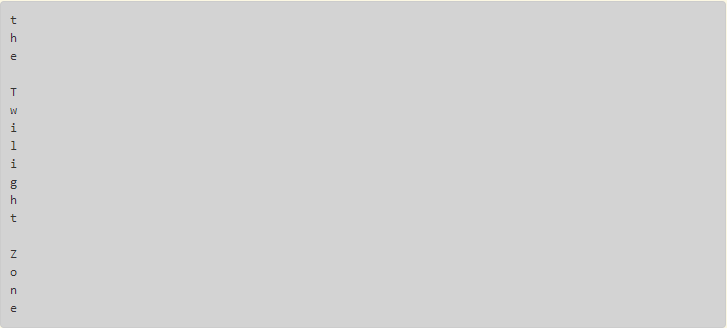

Chapter 7: Iteration
What is an iteration?
An iteration is used to repeat a task. Iterations have different loops, such as the "for loop" and the "while loop".
What is the for loop?
The for loop is used to loop through a sequence, such as strings, lists, tuples and dictionaries. To initiate the for loop, the programmer needs to:
- Type "for"(initiates the for loop)
- Type the variable that takes the value of each item that is being iterated, called the iterator variable. This can be named "i" or another name.
- The programmer needs to type "in" and then the sequence's name, in order to tell the computer what sequence to iterate over.

For loop with strings.
Result:
For loop with lists.
What is the range function?
The range function is used to return a sequence of numbers, which depends on the numbers inside the range function. In order to start the range function, the programmer needs to begin by typing "range()"; inside the parentheses, they can type one number, like 5. This will generate: 0,1,2,3,4.
- Remember that the range function starts to count from 0, which is the first number.
Now, if they want to generate numbers between 5 and 10. Then:
- The first number inside the range function, will be the starting point(states what number to start at), which in this case will be 5.
- Type a comma to separate both numbers
- Type endpoint number(is the number that the range function stops before reaching), which in this case will be 11.
Why is it this way?
- Well, Python starts it's countdown with the startpoint number, and the difference between 5 and 11 is 6, so Python counts these six numbers: "5,6,7,8,9,10".
In addition, this function can be used to perform a task repeatedly, again depending on the numbers inside the range function.
What is the accumulator pattern?
The accumulator pattern is a very useful pattern tool, which can be used to add, subtract or multiply the numbers in a list. It can either increment or decrement the total value of the list of numbers in the sequence.
The way to use the accumulator pattern is to:
- Start with the accumulator variable, which states what number to start with, such as 0(this variable is stated before the for loop).
- Initiate for loop, which iterates through the sequence.
- The accumulator variable starts with the original value of 0, and each time it updates the accumulator variable by adding, subtracting, or multiplying each time it iterates through a number from the list.
How to use the for loop for indexing?
Indexing in a for loop can be done in lists, strings, dictionaries and other types of sequences. To start indexing in a for loop:
- Create a sequence
- Type a for loop that uses the range function, with either the amount of items in the sequence or less than the total number of items.
- Print the iterator variable, with a comma next to it, and lastly the name of the sequence/variable name, square brackets next to it, and inside the brackets the variable name.
But why print that?
- Well, first the iterator variable is printed because it generates the numbers that are in the range function, and the numbers that will be used to enumerate/index the items in the sequence.
- The variable name[iterator variable] is printed, because it tells Python to assign every number in the range function that is being iterated, to put those in order of the items in the sequence.